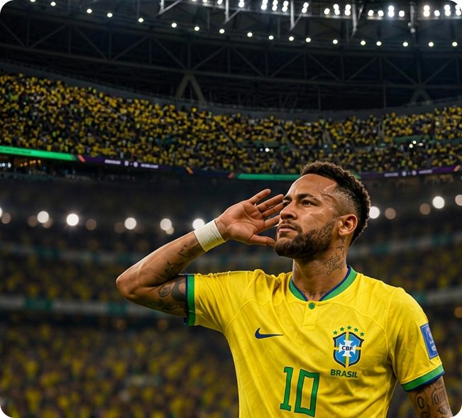
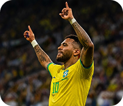
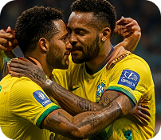
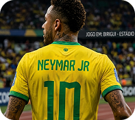
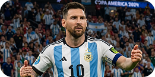
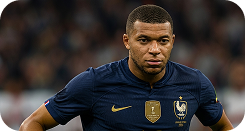
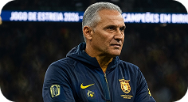

Copa News: Neymar, que noite inesquecível! Como você define essa vitória e a classificação para a final?
Neymar: É difícil até encontrar palavras. Foi um jogo muito duro contra uma grande seleção, mas o grupo está de parabéns.
Copa News: Você foi decisivo mais uma vez, com dois gols importantes.
Neymar: Fico feliz por poder ajudar a equipe nos momentos mais importantes.
Copa News: A torcida brasileira fez uma festa linda no Lusail.
Neymar: A torcida é o nosso 12° jogador! A energia que eles passam é surreal.
Copa News: O que o grupo precisa fazer para sair com o título?
Neymar: Manter a cabeça no lugar, respeitar o adversário e fazer o nosso jogo.

A TORCIDA É O NOSSO 12º JOGADOR! ESSA ENERGIA NOS EMPURRA PARA ALÉM DOS NOSSOS LIMITES.
— NEYMAR



MAIS ENTREVISTAS

Lionel Messi fala sobre o sonho de conquistar mais um título mundial

Mbappé analisa derrota e projeta futuro da França após eliminação

Tite elogia elenco: "Grupo unido e focado no hexacampeonato"